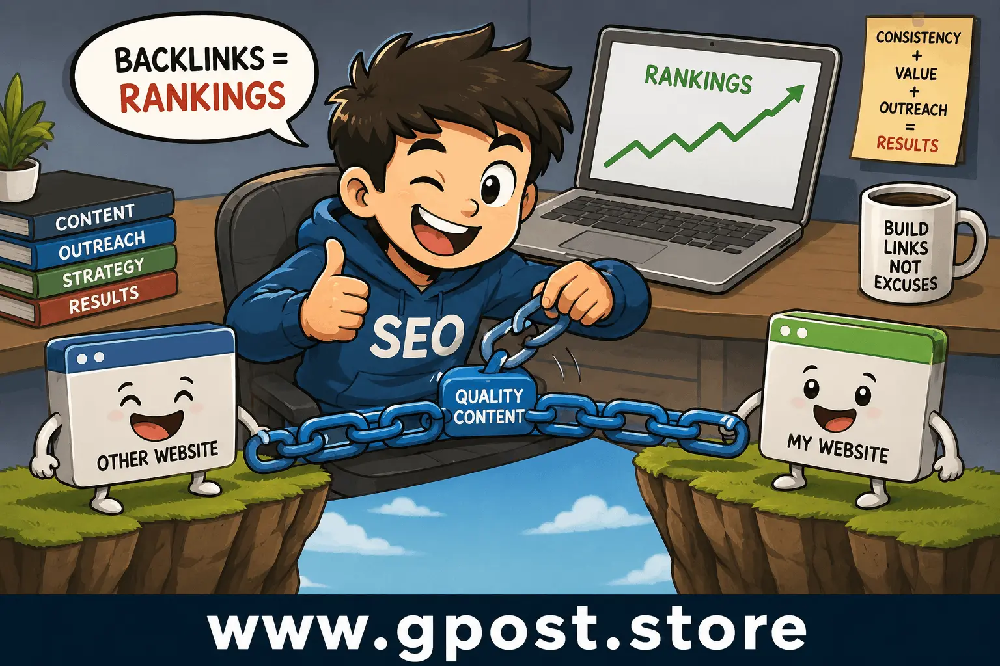
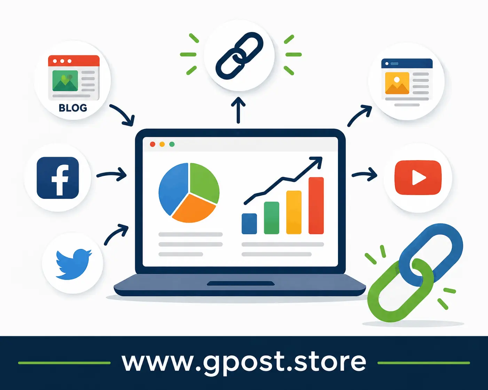

How to Create Backlinks Step by Step Free – SEO Guide
How to create backlinks step by step free is one of the most effective ways to improve your website’s rankings, increase organic traffic, and build long-term authority in Google search results. Whether you are running a blog, affiliate website, local business site, or eCommerce store, backlinks remain one of the strongest ranking factors in SEO.
Many beginners think backlink building is expensive, but the truth is that there are many powerful free methods available today. If done correctly, free backlinks can improve your domain authority, help pages get indexed faster, and increase visibility for competitive keywords.
In this complete guide, you will learn how to create backlinks for my website free using safe and proven strategies. You will also discover how to create website backlinks free, how to build backlinks fast free methods, and practical techniques professionals still use in 2026.
What Are Backlinks?
Backlinks are links from one website to another. When another website links to your content, Google sees it as a signal of trust and relevance.
For example, if a marketing blog links to your SEO article, that hyperlink becomes a backlink for your website.
Why Google Values Backlinks
- They help search engines discover new pages
- They improve website authority
- They increase organic rankings
- They send referral traffic
- They build trust and credibility
The more relevant and authoritative backlinks you earn, the stronger your SEO performance becomes.

Effective backlink building strategy for SEO growth
Why Backlinks Still Matter in 2026
Google’s algorithm has evolved significantly, but backlinks continue to be a major ranking factor. Search engines now focus more on quality, topical relevance, and authority instead of spammy link quantity.
Benefits of High-Quality Backlinks
- Higher keyword rankings
- More organic traffic
- Better domain authority
- Improved trust signals
- Faster indexing
- More visibility in AI search engines
Websites with strong backlink profiles often outrank competitors even when content quality is similar.
Types of Free Backlinks
Guest Posting
Guest posting involves publishing content on another website in exchange for a backlink. This is one of the safest and most effective SEO strategies.
Niche Edits
Niche edits are backlinks inserted into existing articles on relevant websites. These links often carry strong authority because the page is already indexed.
Profile Backlinks
Many websites allow users to create profiles with website links. These are easy beginner backlinks.
Directory Submissions
Business directories help create foundational backlinks and improve local SEO signals.
Forum Links
Participating in niche communities and forums can generate referral traffic and natural backlinks.
Social Signals
Social media platforms may not directly improve rankings, but they help content get discovered and linked naturally.
How to Create Backlinks for My Website Free
If you are wondering how to create backlinks for my website free, start by focusing on relevance and content quality instead of chasing hundreds of random links.
Step 1: Publish Valuable Content
People only link to content that provides value. Create detailed tutorials, statistics, case studies, and helpful resources.
- SEO guides
- Industry research
- Comparison articles
- Free tools
- Checklists
- Templates
Step 2: Find Relevant Websites
Search for websites in your niche that accept guest posts or mention similar topics.
Useful Google search operators:
- "write for us" + your niche
- "guest post" + your keyword
- site:.edu your topic
- intitle:resources your niche
Step 3: Contact Website Owners
Outreach is a critical part of backlink building.
Keep your message short and personalized.
Simple Outreach Example
Hello [Name],
I recently read your article on [Topic] and found it very helpful. I created a detailed guide related to this topic that could provide additional value to your readers.
Would you consider adding it as a resource?
Thank you.
How to Create Website Backlinks Free Using Content Marketing
Content marketing is one of the best long-term backlink strategies.
Create Linkable Assets
Linkable assets are pieces of content designed specifically to attract backlinks.
- Ultimate guides
- Infographics
- Research studies
- Statistics pages
- SEO tools
- Industry reports
Update Existing Content
Refreshing old articles can improve rankings and attract new backlinks naturally.
Use Visual Content
Infographics and charts are highly shareable and often earn backlinks from blogs and media sites.

Content marketing helps generate natural backlinks
How to Build Backlinks Fast Free Methods
Many beginners want faster SEO results. While quality backlinks take time, there are safe ways to speed up the process.
Broken Link Building
Find broken links on websites and suggest your content as a replacement.
HARO and Journalist Requests
Respond to journalist queries and earn backlinks from authority websites.
Resource Page Outreach
Many websites maintain useful resource pages. Reach out and request inclusion if your content fits.
Competitor Backlink Replication
Analyze competitor backlinks and target the same websites.
Skyscraper Technique
Create content better than top-ranking pages and promote it aggressively.
Step-by-Step Backlink Building Strategy
1. Keyword Research
Find low-competition keywords with decent search volume.
2. Content Creation
Create detailed and useful content that solves user problems.
3. On-Page SEO Optimization
- Optimize title tags
- Use internal links
- Add semantic keywords
- Improve readability
- Optimize images
4. Prospect Research
Build a list of websites relevant to your niche.
5. Outreach Campaign
Contact bloggers, editors, and webmasters.
6. Build Relationships
Long-term networking often generates recurring backlink opportunities.
7. Track Results
Use SEO tools to monitor backlinks and rankings.
Best Free Tools for Backlink Building
Google Search Console
Monitor backlinks and indexing performance.
Ahrefs Free Backlink Checker
Analyze competitor backlinks and discover opportunities.
Ubersuggest
Research keywords and backlink profiles.
Hunter.io
Find outreach email addresses.
Google Alerts
Track brand mentions and outreach opportunities.
Common Backlink Building Mistakes
Buying Spam Links
Low-quality paid links can trigger Google penalties.
Using Irrelevant Websites
Topical relevance matters more than random authority metrics.
Over-Optimized Anchor Text
Using exact-match anchors excessively looks unnatural.
Ignoring Content Quality
Weak content rarely attracts strong backlinks.
Building Too Many Links Too Fast
Unnatural link velocity may appear manipulative.
Anchor Text Best Practices
Anchor text is the clickable text used in a hyperlink.
Recommended Anchor Types
- Branded anchors
- Naked URLs
- Partial-match keywords
- Generic anchors
- LSI variations
Avoid Excessive Exact Match Anchors
Google prefers natural anchor diversity.
Internal Linking and Backlinks
Internal links help distribute authority across your website.
Benefits of Internal Linking
- Better crawling
- Improved user experience
- Stronger topical relevance
- Higher page authority flow
Combine internal linking with backlink building for maximum SEO impact.
Niche Relevance in Link Building
Backlinks from websites related to your niche carry stronger SEO signals.
For example, an SEO blog linking to your SEO article is more valuable than a random unrelated website.
Examples of Relevant Niches
- SEO websites
- Marketing blogs
- Business publications
- Technology websites
- Digital marketing forums
Guest Posting Strategy for 2026
Guest posting remains one of the safest and most scalable backlink strategies.
Learn more advanced strategy here: Guest Posting Outreach
How to Find Guest Posting Sites
- "write for us" + SEO
- "guest post guidelines"
- "submit article" + marketing
How to Pitch Successfully
- Personalize your message
- Suggest unique topics
- Show writing samples
- Keep emails short
How AI Search Is Changing Backlink SEO
AI-driven search engines now evaluate content quality, topical authority, and trust more deeply.
However, backlinks still remain a core trust signal.
What Matters More in 2026
- Topical authority
- Helpful content
- Natural backlinks
- Brand mentions
- User engagement
When to Avoid Certain Backlink Strategies
Avoid Private Blog Networks
PBNs can lead to manual penalties.
Avoid Automated Link Building Software
Most automated backlinks are low quality.
Avoid Link Farms
Link exchanges and spam networks are risky.
Is Free Backlink Building Worth It?
Yes, absolutely. Free backlink building is still highly effective if you focus on quality, consistency, and relevance.
While it takes more effort than buying links, it creates safer and more sustainable SEO growth.
Many successful websites built their authority using free methods like outreach, guest posting, and valuable content marketing.
Frequently Asked Questions
1. What are backlinks in SEO?
Backlinks are links from external websites pointing to your website to improve authority and search engine rankings.
2. How to create backlinks for my website free?
Create valuable content, perform outreach, submit guest posts, and build profile backlinks using free SEO methods.
3. How to create website backlinks free quickly?
Use guest posting, resource page outreach, and broken link building to generate backlinks faster naturally.
4. Are free backlinks effective?
Yes, high-quality free backlinks can significantly improve rankings, authority, indexing, and organic search traffic.
5. What are niche edits?
Niche edits are backlinks inserted naturally into existing articles on already indexed and authoritative websites.
6. Which backlinks are safest?
Editorial backlinks from relevant and trustworthy websites are considered the safest and most powerful.
7. How many backlinks do I need?
The number depends on keyword competition, niche authority, content quality, and competitor backlink profiles.
8. Can backlinks improve indexing?
Yes, backlinks help search engines discover pages faster and improve crawling efficiency across websites.
9. What tools help with backlink building?
Google Search Console, Ahrefs, Ubersuggest, and Hunter.io help analyze and build backlinks efficiently.
10. Are backlinks still important in 2026?
Yes, backlinks remain one of Google’s strongest ranking factors alongside content quality and topical relevance.
Conclusion
How to create backlinks step by step free is still one of the smartest SEO strategies for improving rankings, authority, and organic traffic in 2026. The key is focusing on relevance, quality content, outreach, and natural link acquisition instead of spammy shortcuts.
If you consistently publish valuable content, build relationships in your niche, and use ethical SEO strategies, backlinks will continue strengthening your website’s authority over time.
Start implementing these methods today and focus on long-term SEO growth instead of temporary ranking tricks.
Learn more advanced SEO strategies from
Best Guest Posting Service.